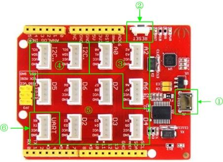
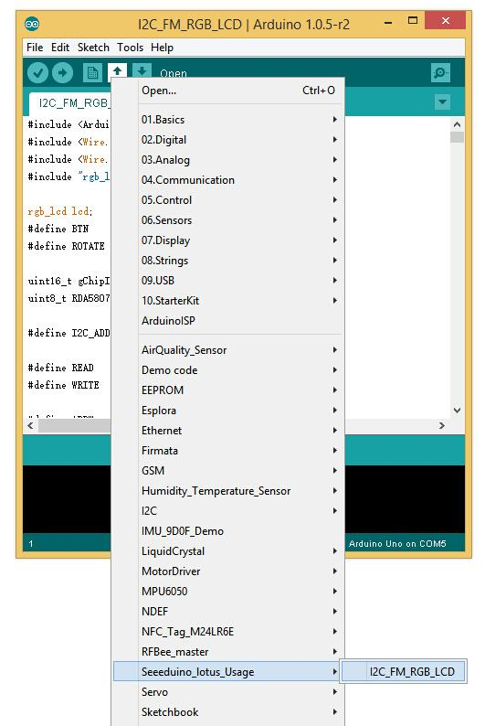
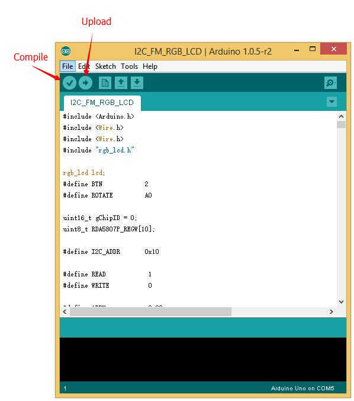

Seeeduino Lotus v1.0
Seeeduino Lotus is an ATMEGA328 Microcontroller development board. It is a combination of Seeeduino and Base Shield. It uses an Atmel ATMEGA328P-MU and CH340. ATMEGA328P-MU is a high performance, low power AVR 8-Bit Microcontroller. CH340 is a USB bus converter chip that can realize a USB to serial interface. Seeeduino Lotus has 14 digital input/outputs (6 of which can output PWM) and 7 analog input/outputs, a micro USB connection, an ICSP header, 12 Grove connections, a reset button.
Specification
- Microcontroller: ATmega328P-MU
- Operating Voltage: 5V
- Digital I/O Pins: 14
- PWM Channels: 6
- Analog Input Channels: 7
- DC Current per I/O Pin: 40 mA
- Flash Memory: 32 KB (ATmega328P-MU)
- RAM: 2 KB (ATmega328P-MU)
- EEPROM: 1 KB (ATmega328P-MU)
- Clock Speed: 16 MHz
Interface Function

- ①：Micro USB
- ②：Reset button
- ③：Analog Ports: Analog sensors can return readings ranging from 0 to 1023. Compared with digital sensors that only return 0 or 1, analog readings are more detailed and precise.
- ④：I2C Ports: I2C is a low-speed bus protocol that transfers data via two wire : SCL and SDA . SCL is the clock line that synchronizes data transfer over the I2C bus, and SDA is the data line.
- ⑤：Digital Ports: Normally, they are used when reading a digital sensor that only outputs 0 or 1, or turning ON or OFF an actuator.
- ⑥：UART Port: We can control serial device by this port.
Driver Install
Seeeduino Lotus uses CH340 to download. It needs a driver to be installed.
Windows/Linux
Totally compatible with serial application program in computer endpoint Windows operation system
- 1) Plug it to computer's USB Port.
- 2) Wait till you find it in Device Manager.
- 3) If you do not find the port, please download the Driver from Here

Mac OS
Download the driver from here: http://www.wch.cn/download/CH341SER_MAC_ZIP.html
On Mac OS Yosemite:
- 1) Download and install the CH340/CH341 driver package
- 2) Open Terminal program (located in /Applications/Utilities/)
- 3) Type command:
sudo nvram boot-args="debug=0x146 kext-dev-mode=1"
- 4) Enter your password for sudo
- 5) Restart your computer
The driver is not signed in Yosemite, so you need to bypass the signed driver check.
If you want restore your Mac’s setting, you can exit developer mode by redefining the boot-arg to your previous settings, or clear your boot-args as follows: sudo nvram -d boot-args
To see what the current boot-args are, if any, type: sudo nvram boot-args
Usage
Here is how to use Seeeduino Lotus.
Hardware Installation
- Seeeduino Lotus v1.0
- Grove - LCD RGB Backlight
- Grove - I2C FM Receiver
- Grove - Button
- Grove - Rotary Angle Sensor
- 2) Hardware linking is very easy, Grove - LCD RGB Backlight and Grove - I2C FM Receiver communicate over I2C, Grove - Button is a digital input, Grove - Rotary Angle Sensor is an analog input. So it can be linked as shown below.
Software Part
- 1) To download the demo code in github, click here.
- 2) To install Arduino Library, please click Here
- 3) Open the I2C_FM_RGB_LCD example sketch: File->Examples->Seeeduino_lotus_Usage->I2C_FM_RGB_LCD

- 4) In the Tools > Board menu, select Arduino Uno.
- 5) Select the serial device of the Arduino board from the Tools | Serial Port menu.
- 6）Now, simply click the "Upload" button in the environment. Wait a few seconds - If the upload is successful, the message "Done uploading." will appear in the status bar.

Bug Report
- The silk printed near the D5 Grove connector has an error. The D4,D5 should be D5,D6. We will fix this error asap.
Resource
Copyright (c) 2008-2016 Seeed Development Limited (
www.seeedstudio.com /
www.seeed.cc)
This static html page was created from http://www.seeedstudio.com/wiki